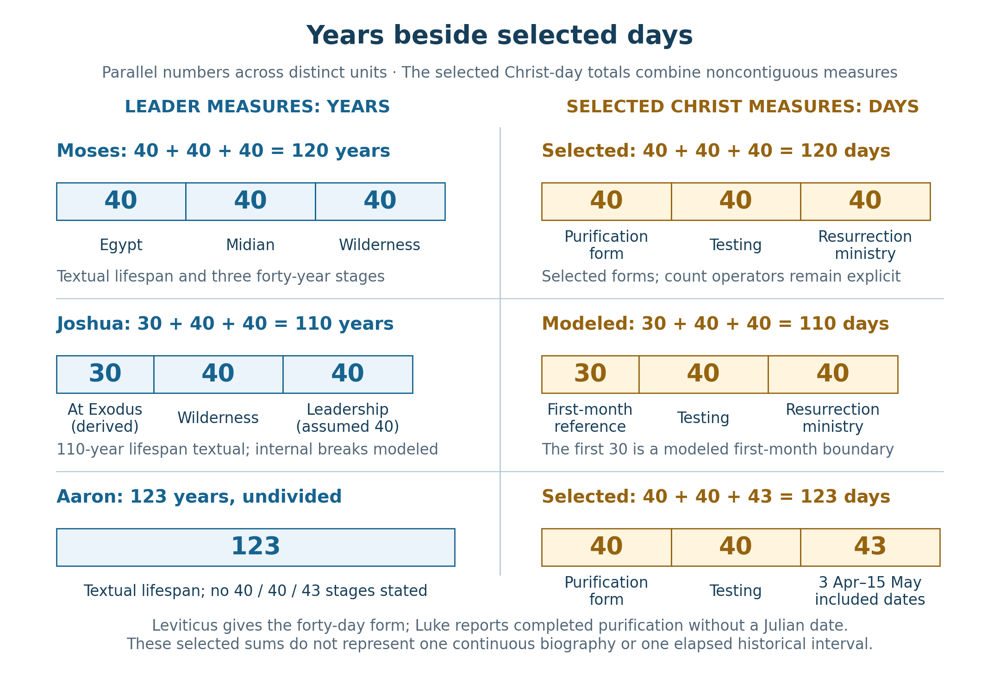
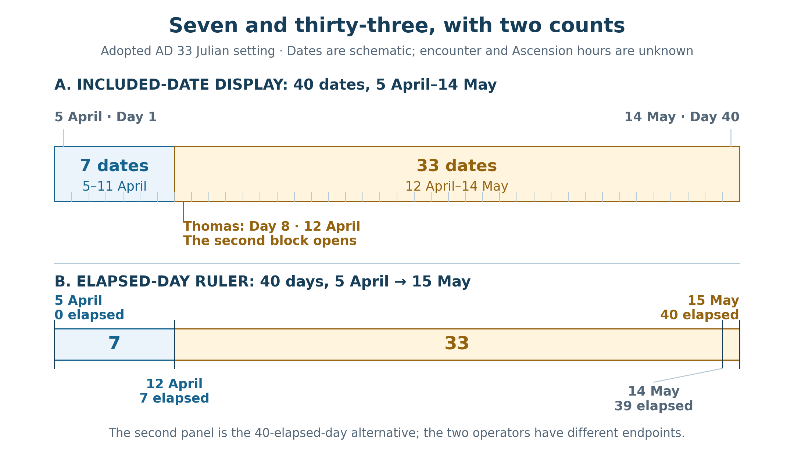

Book 1 · The Cross at the Center of Time · Chapter 14 of 18
The measures of the prophet, the conqueror, and the priest
“For the law was given through Moses; grace and truth came through Jesus Christ.”
— John 1:17
John brings Moses into the opening of his Gospel. The Law belongs within the story he is telling, and its witness leads toward the One who makes the Father known. Later, Jesus will tell His hearers that Moses wrote about Him. I want to follow that testimony into the lives of the people who carried Israel toward its inheritance.1
Moses leads the people out of bondage. Joshua brings them into the land. Aaron ministers before God on their behalf. Each receives an appointed work, and each dies before the whole promise has reached its fullness. Their lives leave us looking beyond the servant toward the Son.
Their numbers also invite attention. Moses dies at 120, Joshua at 110, and Aaron at 123. These are stated ages. The internal divisions of their lives have different kinds of support: Stephen explicitly gives Moses's successive forty-year stages, while the Joshua chronology used in this book includes a reconstruction. Keeping that distinction visible allows the lives to contribute their actual testimony.2
I will place their years beside selected day measures in Christ's life. The comparison gathers His infancy, testing, death, and Resurrection ministry into one field of contemplation. I believe the relation may reach deeper than a later reader's arrangement. The Cross may actually give earlier history its form, as well as bring that history toward its appointed completion. The calculations below serve that inquiry by identifying the measures I have chosen.
In this chapter
- Moses and the work Joshua carries forward
- The firstborn and the days of purification
- Years gathered into selected days
- Seven and thirty-three around the risen Lord
- Firstfruits and the confession of Thomas
- Eden, the Flood, and the way opened
- Aaron and the extended closing measure
- The many servants and the one Son
- Sources and notes
Moses and the work Joshua carries forward
Stephen tells Moses's story in three forty-year movements. At forty he visits his fellow Israelites. Forty years later the angel appears to him at the burning bush. He then leads the people through the wilderness for forty years. Deuteronomy gives his final age as 120.
The repeated form carries a life through preparation, exile, and service. The man who first attempts to deliver an Israelite must himself be sent by God. The shepherd returns to Egypt, and the deliverer becomes the servant who bears the burden of a people. The three stages belong to one calling.
Joshua's final age is equally explicit: 110. His age at the Exodus is not given directly. Within the Repository's adopted reconstruction, his birth is placed at 1476 BC and his death at 1366 BC. The Exodus and Conquest anchors then give the following year-label display.3
Table 1 — Moses and Joshua in the adopted chronological scaffold
| Selected event | Year BC | Moses's age | Joshua's age |
|---|---|---|---|
| Moses's birth | 1526 | 0 | — |
| Joshua's derived birth | 1476 | 50 | 0 |
| Exodus | 1446 | 80 | 30 |
| Conquest begins | 1406 | 120 | 70 |
| Joshua's derived death | 1366 | — | 110 |
The Joshua partition is therefore 30 + 40 + 40 = 110: thirty years before the Exodus, forty through the wilderness, and forty from the Conquest anchor to the reconstructed death year. Scripture supplies the lifespan; the adopted chronology supplies those internal divisions. Judges does not independently state that Joshua ruled the land for exactly forty years, and it expressly remembers elders who outlived him.
The wider span from Moses's birth to Joshua's reconstructed death gives another form:
1526 − 1366 = 160 = 4 × 40 years.
I place that fourfold forty beside the promise of return in the fourth generation. The Repository permits this scale of comparison. It is a typological application of the reconstructed scaffold, rather than a claim that Genesis separately dates those four generations from Moses's birth.4
In this reconstruction, Joshua is seventy at the Conquest: thirty years before the Exodus and forty in the wilderness. I place that proposed age beside the seventy-year exile associated with the later high priest Joshua and Zerubbabel. The two Joshuas serve at different moments of return. Their likeness is worth contemplating, although the later exile's duration does not independently establish the earlier Joshua's age.5
Hebrews gives the comparison its direction. Joshua's entry into the land did not exhaust God's rest; another day remained to be spoken of. The shared name carried into Greek as Jesus and Joshua makes the relationship especially close. I look toward the greater Joshua who brings His people through death into a rest that an earthly campaign could not complete.
The firstborn and the days of purification
Christ's infancy supplies the first day measures. Luke places His birth within the census setting, names Him Mary's firstborn Son, records His circumcision on the eighth day, and then brings the family to Jerusalem when the days of purification have been completed.
Leviticus gives the male-birth form as seven days followed by thirty-three days. Circumcision falls on the eighth day, at the beginning of that second counted portion. The whole purification form is forty days. It concerns the mother after childbirth; its use here begins with that legal setting.6
The Torah also gives one month of age as the starting point for counting and redeeming firstborn sons. Numbers counts Levite males and Israelite firstborn males from a month old, and its redemption rule sets the valuation of the firstborn from that age. These notices concern counting, substitution, and redemption. God's claim upon the firstborn is already expressed through birth and the opening of the womb.7
Luke's census setting and the Torah's counting of firstborn people give me a fruitful comparison. They do not supply an otherwise unreported payment on Jesus's thirtieth day. Luke does not narrate such a date, and a biblical month is not automatically thirty elapsed days.
For the numerical form I therefore retain the selected thirty-day reference used in Chapter 8. Beginning with the book's adopted December 25, 1 BC birth date, thirty elapsed days reach January 24, AD 1. If the birth is called Day 1, January 23 is instead the thirtieth included date. January 24 is the chosen thirty-day boundary, not a recovered date of Jesus's redemption payment.8
The two infancy measures can now be heard together. Forty comes from the purification form associated with the presentation narrative. Thirty comes from a modeled boundary at thirty days of age associated with the firstborn legislation. Each has a place in the comparison, while its source and counting convention remain apparent.
The age of thirty has another scriptural association. Numbers gives thirty as one threshold for the service of the Levite clans carrying the sanctuary, and Luke says that Jesus was about thirty when He began His work. The Levitical service rules have their own variations and are not a universal statement that every priest began at exactly thirty. Nor does Luke turn the approximate age into an exact anniversary. The numerical likeness can remain without asking those passages to settle more than they report.9
Years gathered into selected days
The next forty is Christ's testing in the wilderness. He faces the adversary in the place where Israel had been tested and answers from the Law. The story carries the obedience of the Son into the wilderness experience of the people. His forty days can stand beside their forty years without becoming the same historical interval.
Acts supplies the final forty-day form through the risen Christ's appearances and instruction about the kingdom. The One who was rejected is alive, gathering and preparing the people He will send. The movement from preparation through testing to a commissioned people recalls the leaders whose lives we have followed.10
The selected Moses comparison is:
40 + 40 + 40 = 120.
The selected Joshua comparison changes the infancy term:
30 + 40 + 40 = 110.

The leaders' lifespans are textual data. Joshua's internal partition and the Christ-day composites are declared constructions. The forty-three-date term, explained below, uses April 3–May 15 inclusive. The selected forms gather separated events and legal measures rather than describe one continuous 120-day, 110-day, or 123-day life.

These are composite measures drawn from separated parts of Christ's life. Years lie between the infancy and wilderness scenes. The sum is not a continuous 120-day or 110-day biography. The first forty is a legal purification form associated with Luke's narrative, and the thirty is an expressly modeled thirty-day age reference. The testing and Resurrection periods come from their respective narratives. Their gathering is the theological operation I am proposing.
I find the two forms fitting to the Son. He speaks the word of God and carries His people toward the inheritance. The Lord who teaches the Law's fulfillment is also the Lord who conquers death. Neither Moses's service nor Joshua's entry into Canaan completes that work on its own. In Christ, proclamation and entrance belong to one act of deliverance.
The comparison need not imply that the earlier leaders knew the later day arithmetic. I am seeking the divine intention within which their histories received their shape. If time itself takes its deepest order from the Cross, a likeness between the years of the servants and the days of the Son may belong to that ordering. Its significance is considered through the Person to whom the patterns lead.
Seven and thirty-three around the risen Lord
Leviticus's forty-day form offers a closer view of the final forty. Its seven and thirty-three are counted portions of the mother's purification period. The eighth-day circumcision falls after the first seven days, within the thirty-three that follow. It does not insert a forty-first day into the legal total.11
John gives another encounter traditionally placed on an eighth included date. Thomas is absent from the first Resurrection-evening meeting. When the disciples tell him that they have seen the Lord, he insists upon the evidence of the wounds. Eight days later Jesus stands among them and invites him to examine His hands and side. Thomas answers:
“My Lord and my God!”
— John 20:28
The Gospel reports the invitation and the confession. It does not explicitly narrate Thomas carrying out the touching he had demanded. I place the wounded Lord and the disciple's recognition beside the eighth-day sign as a theological likeness. Christ's wounds are the evidence of the death through which He has passed; Thomas is being brought into faith. The risen Jesus is not undergoing a second literal circumcision.12
Under the traditional next-Sunday reading, April 5 to April 12 gives seven elapsed date intervals and eight included dates. Two different forty-day displays can then be stated precisely.
In the fortieth-included-date display, Resurrection Sunday is Day 1 and Thursday, May 14, is Day 40. The first seven dates are April 5–11. The next thirty-three are April 12–May 14. Thomas's traditional Sunday is Day 8, opening the second portion.
7 included dates + 33 included dates = 40 included dates.
In the forty-full-elapsed-day display, April 5 to May 15 gives forty elapsed date-boundary days. April 5 to April 12 contributes seven; April 12 to May 15 contributes thirty-three.
7 elapsed days + 33 elapsed days = 40 elapsed days.

The included-date display closes May 14; the full-elapsed-day display closes May 15. The first has thirty-three included dates beginning with Thomas's Sunday. The second has thirty-three elapsed date intervals after that Sunday. Event hours remain unreported; these are standardized date comparisons.

The two displays retain the same numerical form with different operators and different closing dates. Calling May 14 the fortieth included date does not leave thirty-three elapsed days after April 12: it leaves thirty-two. Chapter 10 established that distinction, and Chapter 8's full-forty-day ledger retains the May 15 comparison.13
This makes the Levitical relation more intelligible to me. A life has been given, the wounds remain visible, and a people is being prepared to enter God's presence. Applying the mother's purification form to redeemed humanity is my theological reading. The Law does not prescribe forty days of postpartum impurity for the risen Christ or His disciples. Its sequence gives a form through which I contemplate their passage into a renewed calling.
Firstfruits and the confession of Thomas
The two Sundays also retain the festival relationships examined in Chapter 12. In the later lunar row, Resurrection Sunday is Nisan 16; a fixed-sixteenth sheaf offering and the weekly-Sunday interpretation coincide there. In the earlier lunar row the same Sunday is Nisan 17, and its fixed sixteenth is the preceding Saturday. The rules and month beginnings must both be stated.
The regular solar calendar places its barley festival on Nisan 26, the following Sunday in the adopted AD 33 daylight display. That gives a further setting for contemplating Thomas's confession. The Pharisaic fixed-date tradition, the Sunday interpretation associated with Sadducean and Boethusian traditions, and the Essene/Qumran solar witness contribute related perspectives across the two Sundays. They are not all assigned one identical historical offering date.14
The order of the Gospel scenes matters more than a claim that every community had already agreed. Christ is risen before Thomas understands. The Lord brings His disciple from refusal to confession, and the firstfruits promise points toward a harvest still to come. I see a gathering that makes room for the people whose calendars have differed, as their testimony finds its center in Him.
Eden, the Flood, and the way opened
The return to God's presence naturally recalls Eden. Jubilees supplies two dates that must be kept distinct. Its serpent approaches Eve on the seventeenth day of the second month. The departure of Adam and his wife from the garden is dated to the new moon of the fourth month. The latter is the first day of that month, not the second month's seventeenth.15
Genesis dates the beginning of the Flood to the seventeenth day of the second month in the received Hebrew text. It also gives forty days of rain. Those details bring temptation, judgment, preservation, and the hope of renewed life into a common field of comparison. The Flood's beginning, the departure from Eden, and the later exit from the ark remain different events.16
The adopted Passion calendar does not place either of our forty-day closing references on the seventeenth day of the second month. The daylight labels can be illustrated by retaining thirty days in Nisan for the lunar rows and the native thirty-day first solar month.
Table 2 — Second-month labels at the selected closing references
| Reckoning at a chosen noon reference | May 14 AD 33 | May 15 AD 33 |
|---|---|---|
| Later lunar row with 30-day Nisan | Day 25 | Day 26 |
| Earlier lunar row with 30-day Nisan | Day 26 | Day 27 |
| Evening solar row | Day 28 | Day 29 |
If Nisan contains twenty-nine days in either lunar example, its displayed second-month labels increase by one. The solar row retains its native month lengths. The exact hour of Ascension is not supplied, so noon is only the reference used to compare these labels. Neither closing reference establishes a second-month-seventeenth anniversary.17
I therefore approach the Eden relation through the movement of the narratives. Humanity is sent from the garden; the risen Christ goes to the Father and prepares His witnesses for their work. Paul calls Him the last Adam. The restored way into God's presence can be contemplated through Him without assigning the two events an anniversary their sources do not give.18
The image remains substantial. The Son's victory can reach back to the wound at the beginning and forward to the renewed creation. The forty-day Flood comparison also retains its force as a likeness of passage through judgment toward life. I seek the Lord whose work gathers those histories, with the dates belonging to each history preserved.
Aaron and the extended closing measure
Aaron brings the priestly witness into the comparison. Numbers gives his age at death as 123. His rod had earlier produced buds, blossoms, and almonds, a sign confirming his appointed service. Hebrews remembers that rod among the sanctuary's sacred objects.19
The proposed day measure is:
40 + 40 + 43 = 123.
The final term counts forty-three dates inclusively, from Crucifixion Friday, April 3, through Friday, May 15. May 15 is the closing date of the separate forty-full-day interval measured from Resurrection Sunday. Using the traditional fortieth included Resurrection date, May 14, would give forty-two included dates from the Crucifixion instead.
Table 3 — The closing intervals and their included dates
| Selected date interval AD 33 | Elapsed date intervals | Included dates |
|---|---|---|
| April 5 to May 14 | 39 | 40 |
| April 5 to May 15 | 40 | 41 |
| April 12 to May 14 | 32 | 33 |
| April 12 to May 15 | 33 | 34 |
| April 3 to May 14 | 41 | 42 |
| April 3 to May 15 | 42 | 43 |
The last row supplies the forty-three-date envelope. It does not follow by adding three burial dates to forty included Resurrection dates: those two lists would both contain Resurrection Sunday. Their union would contain forty-two distinct dates, not forty-three. The forty-three here comes from the May 15 closing convention already identified.20
I retain the Aaron comparison with that explicit selection. The first term is the forty-day purification form, the second the wilderness testing, and the final term a forty-three-included-date Passion-to-closing envelope. This combines selected numerical measures; it does not assert three newly recovered stretches of precisely timed biography.
The forty and forty-three also recall the numerical relation between four hundred and four hundred thirty. Genesis's affliction prophecy and Exodus's sojourn notice must still be read in their own contexts. Their numbers do not authorize changing Acts's forty-day notice into a newly reported forty-three-day Resurrection ministry. The Aaron construction includes the Passion dates within a larger selected envelope.21
The rod's life gives the priestly comparison its direction. A sign of fruitfulness appears where a cut staff could produce none of itself. In Christ, the likeness leads toward the One who has passed through death and lives to intercede. Hebrews identifies His priesthood according to the order of Melchizedek and speaks of His descent from Judah. I do not make Him an Aaronic priest by genealogy. Aaron's sign contributes a witness to the living Priest who fulfills what the older service anticipated.22
The many servants and the one Son
The three measures have now reached their common purpose. Moses bears the word and serves in God's house. Joshua leads the people into the inheritance. Aaron ministers before God and receives the sign of the living rod. Their works can be contemplated together in the Son who speaks, conquers, and intercedes.
Joshua himself was a leader of the Conquest, not a king whose office can simply be transferred by arithmetic. The royal fulfillment belongs to Christ in the broader scriptural witness. The numerical forms help me attend to the gathering of the roles; their authority comes from the Lord to whom the narratives point.23
I find the stated ages—120, 110, and 123—meaningful within that gathering. The divisions of those lives and the day measures I place beside them rest on different kinds of evidence, which I have identified throughout the chapter. I want to hear the servants together, as people whose appointed work receives its deepest relation from the Son.
The Cross may be the place from which that relation actually reaches through time. Christ's hour can give the ancient pattern its form while opening the future toward its completion. I contemplate the years of Israel's leaders and the selected days of His earthly work within that possibility. The One who gives time its order is also the One who brings His people home.
The next chapter returns to the adopted span from circumcision to Crucifixion Friday. Its full civil-day frame runs from January 1, AD 1 at midnight to April 4, AD 33 at midnight: 11,781 complete days, or 77 × 153. Friday is the final day within that frame. The next chapter follows that measure toward the forgiveness at the center of the book.24
Sources and notes
1. John 1:14–18 and 5:45–47; Hebrews 3:1–6. The opening quotation is BSB John 1:17. Moses's witness and the servant/Son relation supply the narrative setting for the chapter's numerical comparisons. Return to text
2. Acts 7:23, 30, 36; Deuteronomy 34:7; Joshua 24:29; Numbers 33:39. These establish Moses's forty-year stages and final 120, Joshua's 110, and Aaron's 123. The chapter's role descriptions are theological comparisons, not an assertion that all three held the same office. Return to text
3. Repository File 03, §§2.1 and 3 retains Joshua's derived 1476 BC birth and 1366 BC death field. File 61, §13.6 retains the Joshua 30 + 80 comparison. The table uses the adopted year labels; it does not certify unknown birth or death hours. Judges 2:7–10 distinguishes Joshua, the elders who outlived him, and the passing of that generation. Return to text
4. Genesis 15:13–16; Repository File 15, §3, for the scale-dependent four-generation comparison. The 160-year application begins at Moses's adopted birth, not an explicit starting notice in Genesis 15. Joshua's reconstructed forty years after the Conquest are not independently proved by the resulting fourfold symmetry. Return to text
5. Ezra 3:2; Haggai 1:1; Jeremiah 25:11–12 and 29:10. Joshua/Jeshua the high priest and Zerubbabel belong to the return setting. The seventy-year exile is not the high priest's stated age, nor independent evidence for the Conquest Joshua's proposed age seventy. Return to text
6. Luke 2:1–7, 21–24; Leviticus 12:2–8. Luke reports the census, firstborn birth, eighth-day circumcision and completed purification, without assigning a Julian presentation date or explicitly stating forty elapsed days from birth. Leviticus's male-birth purification form is 7 + 33 = 40. The presentation comparison uses that legal form; the mother's purification is not attributed as bodily impurity to Jesus. Return to text
7. Numbers 3:15, 40–51 and 18:15–16; Exodus 13:1–2, 11–15. Month-old counting, Levite substitution, the five-shekel redemption rule and the prior consecration of the firstborn are related legal provisions. None defines the beginning of human personhood at thirty days. Return to text
8. Chapter 8's selected thirty-day boundary is January 24, AD 1, from the adopted December 25, 1 BC birth. This is thirty elapsed date intervals or thirty-one included dates. The thirtieth included date is January 23. No civil year zero is inserted. The chosen boundary is not a documented redemption payment, and no fixed thirty-day astronomical lunar month is inferred. Return to text
9. Numbers 4:1–3 and 8:23–26; Luke 3:23. Thirty and twenty-five occur in the Levite service provisions. Those roles and passages require their own interpretation; the chapter does not make thirty a universal beginning age for Aaronic priests. Luke gives Jesus's age approximately. Return to text
10. Matthew 4:1–11; Luke 4:1–13; Acts 1:3–11; Hebrews 4:8–11. The Scripture periods and the greater-rest comparison support the chapter's setting. The 120/110 sums are selected noncontiguous numerical forms, not continuous life intervals or a scriptural command to sum them. Return to text
11. Leviticus 12:2–4. First seven included dates followed by thirty-three more give forty. Day 8 begins the second portion and is not added as a separate day to 7 + 33. With the adopted December 25 birth called Day 1, January 1 is Day 8 and February 2 is Day 40; forty full elapsed days instead reach February 3. These are illustrative count outputs, not independently supplied presentation dates. Return to text
12. John 20:24–29; Colossians 2:11–13, for the broader circumcision, burial and raised-life field. John reports the invitation to Thomas and his confession, not an explicit act of touching. The traditional next-Sunday arrangement places the encounter on April 12, AD 33, eight dates inclusive from April 5. The Greek after-eight-days expression is not treated as an exact 192-hour stopwatch interval. Return to text
13. Acts 1:3. April 5 → May 14 is 39 elapsed date intervals / 40 included dates; April 12 → May 14 is 32 / 33. April 5 → May 15 is 40 / 41; April 12 → May 15 is 33 / 34. The two 7 + 33 displays use different operators. These standardized Julian date comparisons do not recover equal event-clock times. Chapter 10 uses the traditional included-date display; Chapter 8 separately retains the full-forty-day construction. Return to text
14. Chapter 12, “Firstfruits across two Sundays,” retains the primary evidence: Josephus's fixed Nisan 16, the rabbinic Boethusian Sunday dispute, and Qumran's first-month twenty-sixth barley festival. Sunday April 5 daylight is J16/S17/E19; Sunday April 12 is J23/S24/E26. Standard morning M begins Nisan 26 at the latter dawn, while the retained phased overlay P begins Day 27. Thomas's hour is unreported. 1 Corinthians 15:20–23 gives Christ as firstfruits. The chapter does not certify uniform observance among every named community. Return to text
15. Jubilees 3:17, 26, 32, R. H. Charles translation. The serpent's approach is II 17; the departure of Adam and his wife is IV 1. The intervening expulsion narrative does not change the dated departure in verse 32 into II 17. The extra-biblical chronology remains a distinct textual witness. Return to text
16. Genesis 7:11–12 and 8:13–19. The received Hebrew Flood-start notice is II 17. Genesis 8:13 dates the dried surface to I 1; verse 14 gives the fully dry earth at II 27, followed by the ark-exit command. The forty days of rain and forty-day Resurrection comparison are typological, not an assertion that their closing calendar dates coincide. Return to text
17. The table uses chosen noon references, not reported Ascension hours. With thirty-day Nisan, May 14 has J II25 / S II26 / E II28; May 15 has J II26 / S II27 / E II29. With twenty-nine-day lunar Nisan the respective J/S second-month labels each increase by one. The regular solar first month remains thirty days. Standard morning M agrees with E at these noon references, and phased P is one date ahead: II29 and II30. The canonical solar origin and phase distinction remain those of File 12, §6.3.3 and Chapter 10. Calendar-dependent Noah/Ascension comparisons elsewhere in the Repository retain their own stated frames. Neither May closing reference in Table 2 falls on the seventeenth day of the second month in the reckonings used here. Return to text
18. Romans 5:12–21; 1 Corinthians 15:45–49; Acts 1:9–11. The last-Adam, ascent and restored-presence comparison is theological. Jubilees's IV1 departure and the adopted May closing references are not asserted to be one anniversary. Return to text
19. Numbers 17:1–11, 33:39; Hebrews 9:1–5. Aaron's lifespan is explicit. The rod's buds, blossoms and almonds confirm the appointed priestly service; its comparison with Resurrection is typological. Return to text
20. April 3 → May 14 gives 41 elapsed date intervals / 42 included dates. April 3 → May 15 gives 42 / 43. The latter supplies this selected Aaron envelope. Three included Friday–Sunday dates plus forty included Sunday–May14 dates contain Sunday twice: 3 + 40 − 1 = 42 distinct dates. For May15, the Resurrection-to-close list has forty-one included dates: 3 + 41 − 1 = 43. This does not make the reported forty-day appearance period into forty-three elapsed days. Return to text
21. Genesis 15:13; Exodus 12:40–41. The MT baseline remains 430 years in Egypt. The 400 and 430 notices have source-defined scopes; the chapter does not describe them as a failed prediction subsequently lengthened. The numerical ratio 430/400 = 43/40 is an analogy, not a chronological warrant for adding three days to Acts. Return to text
22. Hebrews 7:11–17, 23–28. The living Priest is of the order of Melchizedek, and the Lord's descent from Judah is explicit. The Aaron pattern is a typological witness, not a claim that Jesus belonged genealogically to Aaron's house. Return to text
23. Deuteronomy 18:15–19; Acts 3:19–26; John 18:33–37; Hebrews 7. The prophet, royal conqueror and priestly gathering concerns Christ's fulfillment within these wider texts. It does not make Joshua a historically attested king or identify the three numerical matches as independent demonstrations. Return to text
24. Chapter 8 retains January 1, AD 1 opening → April 3, AD 33 opening as 11,780 elapsed days. The full midnight-to-midnight window closes at April 4, AD 33 opening and contains 11,781 complete days = 77 × 153. The adopted birth/circumcision chronology, Julian calendar and absence of civil year zero remain explicit. These civil boundaries do not establish the hours of the circumcision ceremony or Christ’s death. Return to text
Scripture quotations are from the Berean Standard Bible (BSB), public domain.